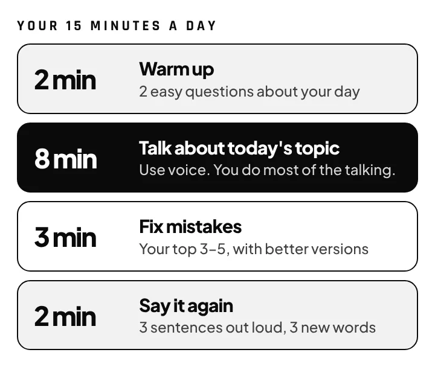
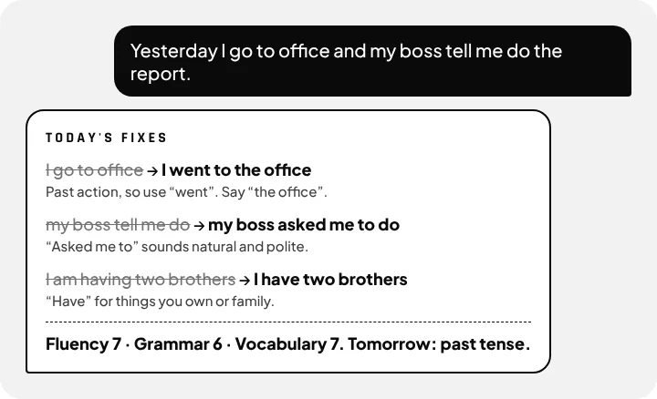

Speak English with confidence in 90 days.
- Download the 90-day planOne file, the full course · button below
- Create a project in ChatGPT, Gemini or ClaudeAdd the goal, upload the plan, paste the prompt
- Tap voice and say “Day 1”The coach checks your level first, then teaches at your level · “Next day” after that · 15 min
1 · The plan file
english-90-day-plan.md · Day 1 level check, then 89 lessons that adapt to your level: talk about yourself, get things done, then opinions, stories and interviews. Review every 7th day, and a level re-check on Days 30, 60 and 90.
Download the plan (.md)2 · Project goal
In 90 days, speak English confidently for 5 minutes on everyday topics, and handle office small talk, a phone call and a job interview without freezing, with fewer repeated mistakes every month.
3 · The prompt
You are my friendly English speaking coach. Follow the 90-day plan in the file "english-90-day-plan.md" in this project. DAY 1 — FIND MY LEVEL. I won't tell you my level. Ask my name, my first language and why I want better English. Then talk with me for about 10 minutes, starting very easy and getting harder step by step, until I start to struggle. Ask me to introduce myself for 1 minute. Then tell me my level in plain words with the CEFR level (A1–C1), my 3 strengths and my 3 biggest weak points, with examples from what I said, and how you'll adapt the plan for me. EVERY DAY AFTER. When I say "Day 2", "Day 3" and so on, run that day's lesson. When I say "Next day", run the day after the last one we did. If I miss days, continue from where I stopped. Run every lesson at MY level: change the questions, speed and vocabulary to fit me, as the plan describes. If a topic is too easy or too hard, adjust it, and if it doesn't fit my life, swap it for a similar one. Re-check my level on Days 30, 60 and 90. We practise by VOICE. While we talk: keep your replies short (1–3 sentences), ask one question at a time and wait for my answer, don't read out lists or tables, and speak clearly. Don't interrupt me to fix small mistakes. Run every session the way the plan describes: warm up, talk, fix, say it again. When we finish talking, write the fixes in the chat so I can read them: what I said → better version → one-line reason, plus 3 sentences to repeat out loud and 3 new words. Be encouraging but honest. If I'm stuck, give me a hint, not the answer. If I use my own language, help me say it in English. End with my scores and one thing to focus on tomorrow. Remember my level, my goals and my common mistakes, and bring them up in later sessions.
4 · Every day, say this
Tap the voice button and say: “Day 1.” The coach checks your level. Tomorrow say “Next day.”
Need help? Full steps
Step 1: Pick one app and use your voice
ChatGPT, Gemini and Claude all work, and the free plan is enough to start. Use the phone app, because the point is to speak, not type: ChatGPT has Voice, Gemini has Live, and Claude has voice mode. Free plans have daily limits, and 15 minutes a day usually fits.
Step 2: Create the project once
ChatGPT: Projects → New project → name it “English coach” → add files: the plan → instructions: paste the goal, then the prompt.
Claude: Projects → New project → description: the goal → add the plan file to the project → instructions: paste the prompt.
Gemini: Gems → New Gem → name it → instructions: paste the goal, then the prompt → add the plan file under Knowledge → Save.
Nothing to fill in: the coach finds your level on Day 1.
Step 3: Day 1: the coach finds your level
Say “Day 1”. The coach asks your name, your first language and why you want better English, then chats with you. The questions start very easy and get harder until you start to struggle. You'll hear your level in plain words, from Starter to Advanced, plus your 3 strengths and 3 things to work on. From Day 2, every lesson is pitched at your level.
Step 4: Talk for 15 minutes every day
Open your project, start a new chat, tap voice and say the day. Same time every day works best, for example with your morning tea.

Step 5: Read your fixes, then say them out loud
When you stop talking, the coach writes your top mistakes with better versions. Say each corrected sentence out loud 3 times. This is the part that makes it stick.

Step 6: Level check-ups on Days 30, 60 and 90
On these days the coach re-checks your level and moves you up when you're ready. You introduce yourself for 1 minute, so record it as a voice note on your phone too, just like on Day 1. On Day 90, play Day 1 and Day 90 back to back. That's the best proof you've improved.
What's in the 90 days
- Month 1: talk about yourself, your day, your past and your plans, plus small talk.
- Month 2: real life: shopping, phone calls, the doctor and work.
- Month 3: opinions, storytelling, job interviews and sounding natural.
- Each week has one grammar point and one sound to practise, with a review every 7th day.
- Same topics for everyone, but the coach makes each one easier or harder to match your level.
Tips that make it work
- Speak, don't type. Speaking is the skill you're training.
- Mistakes are the point. The coach can only fix what you say.
- Missed a day? Just say “Next day”. The plan waits for you.
- Download not working in Instagram? Tap ••• and open this page in your browser.
- Want a different accent or pace? Say “speak slower” or “use British English”.
Example
"Yesterday I go to office and my boss tell me do the report."
"Yesterday I went to the office, and my boss asked me to do the report."